2024年北京市中考数学试题 · 数学解答题 第28题28. 在平面直角坐标系中，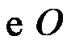的半径为1，对于的弦和不在直线上的点，给出如下定义：若点关于直线的对称点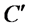在上或其内部，且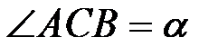，则称点是弦的“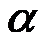可及点”．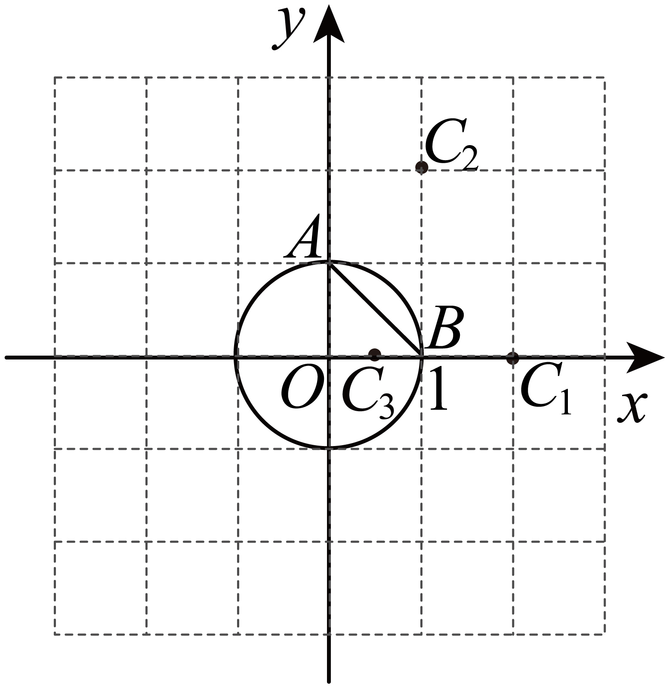（1）如图，点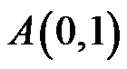，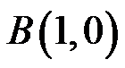．①在点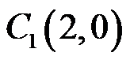，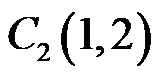，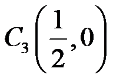中，点___________是弦的“可及点”，其中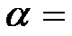____________；②若点是弦的“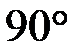可及点”，则点的横坐标的最大值为__________；（2）已知是直线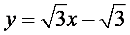上一点，且存在弦，使得点是弦的“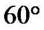可及点”．记点的横坐标为，直接写出的取值范围．